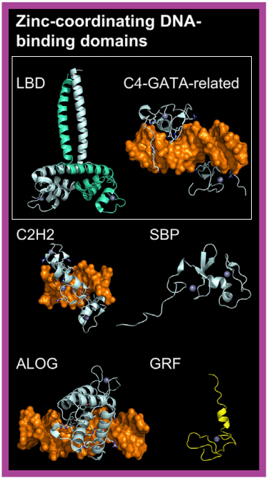

DOF transcription factors bind DNA through their highly conserved DOF domain, which forms a single C2C2-type zinc finger motif. This structural feature led to their classification within the ‘Other C4 zinc finger-type factors’ class.
Their ability to bind DNA in a sequence-specific manner is well-supported by in vitro functional studies
[src]
[src]
[src],
and DNA-binding domain (DBD)/DNA structure modeling research
[src]
[src].
Beyond DNA binding, the DOF domain also facilitates protein–protein interactions with other transcription factors
[src]
[src]
[src]
[src],
highlighting its versatile role in gene regulation.
LBD (LATERAL ORGAN BOUNDARIES DOMAIN) transcription factors bind DNA via their dimeric and highly conserved LOB DBD. Structural analysis of the LOB domain from the wheat Ramosa2 protein (TtRa2LD, PDB ID: 5LY0) reveals that a C4 zinc finger motif is responsible for DNA binding, while homodimerization is mediated by a C-terminal leucine zipper-like motif
[src].
Based on these structural insights, LBD transcription factors have been classified as a new family within the ‘Other C4 zinc finger-type factors’ class.
